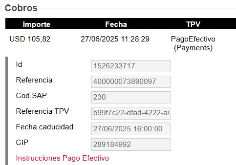

Es un la segunda opcion de pago que tienen los pax en Peru.
Esta plataforma les permite pagar tanto fisica como virtualmente en todas las entidades que estan asociadas.
Al momento de seleccionar se aclaran diferentes puntos claves de este medio:
Costo adicional: Valor de 2usd extras
El sistema enviara un mail informando el Codigo de pago (CIP)
El vencimiento del CIP es independiente al vencimiento de la tarifa es por eso que se sugiere realizar el pago dentro de las 2hs de creada la solicitud
Mail enviado al pax
El mail que dispara el sistema es el siguiente:
Se detalla el CIP, el Vencimiento del CIP y ademas las entidades que tienen para generar el pago.
Pago ok, Emision Automatica
Cuando el sistema detecta el pago realizado por el pax, actualiza la caja, emite el ticket y confirma la reserva pasando el admin a Vendido con la confirmacion enviada.
Admin de ejemplo: V73890097
¿Dónde podemos confirmar el pago?
Si el pax realiza el pago correctamente, lo primero que vamos a recibir es un FD con el detalle del pago.
Si deseamos chequear el pago, tambien tenemos acceso a la plataforma PagoEfectivo
Usuario: greta.armestar@atrapalo.pe
Clave: Atrapalo2023*
Busqueda de CIP en plataforma
Ingresaremos a Reportes / Consultar Historico de CIPs
En los filtros es importante destacar que el estado Cancelada significa Pagada
Podemos buscar por CIP, fechas y estados.
Al darle click al CIP nos mostrará una pantalla con el detalle completo de dicho pago.
En Concepto de Pago podremos ver Nro de admin y proveedor del servicio
Estados Confirmados/Pendientes
Mientras el pago no se haya concretado, tendremos el admin pendiente de emision.
En la caja tenemos el siguiente detalle:
TPV: PagoEfectivo(Payments)
Fecha caducidad: Aclara fecha y horario
CIP: Nro indicado en el mail
Acceso al detalle enviado al pax mediante botón:Instrucciones Pago Efectivo
